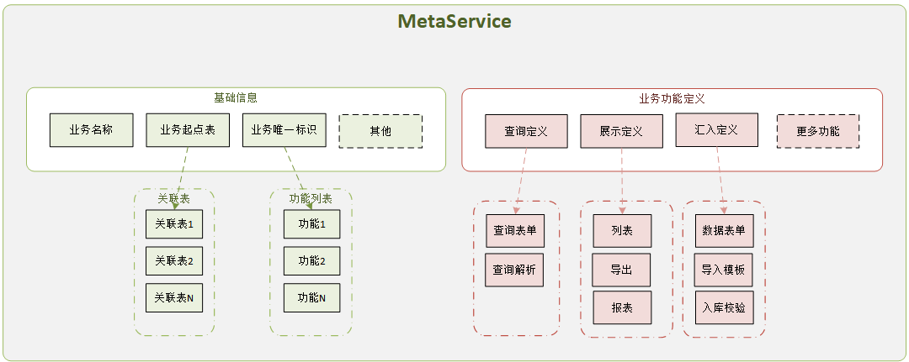
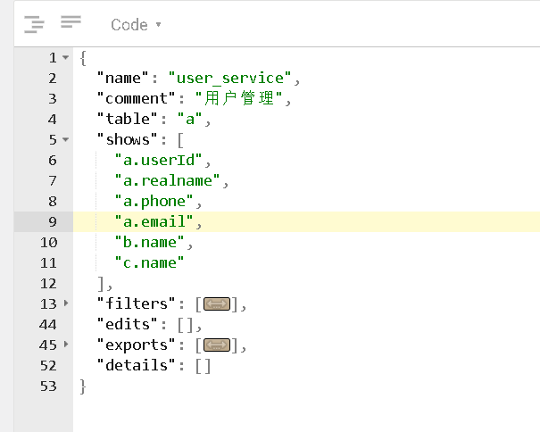

<style>
    /* 自定义下拉菜单外观 */
    .dropdown-menu-table {
        padding: 0;
        border: none;
    }
    .dropdown-menu-table .table {
        margin-bottom: 0;
    }
    .dropdown-menu-table .table td {
        padding: 0;
    }
    .dropdown-menu-table .table a {
        padding: 8px;
        display: block;
    }
    /*.dropdown-menu-table .table a:hover,
    .dropdown-menu-table .table a:active,
    .dropdown-menu-table .table a:focus {
        background-color: #e5e5e5;
        text-decoration: none;
    }*/
</style>
<row class="meta-service">
    <div class="col-md-12">
        <div class="info" style="padding-left: 10px">
            <a @click="showInfo()" href="javascript:;"><i class="icon icon-info"></i></a>
        </div>
        <!-- info -->
        <div class="modal fade" id="f-info">
            <div class="modal-dialog modal-lg">
                <div class="modal-content">
                    <div class="modal-header">
                        <button type="button" class="close" data-dismiss="modal"><span aria-hidden="true">×</span><span class="sr-only">关闭</span></button>
                        <h4 class="modal-title">功能介绍</h4>
                    </div>
                    <div class="modal-body" style="text-align: left">
                        <div style="text-align: left">
                            <p>
                                <b>如何创建一个业务？</b><br><!-- <span style="color: #f1a325;font-size: 25px">so easy</span> -->
                                1、选择业务主表、填写名称、标识码<br>
                                2、保存<br>
                                3、业务维护(常规业务维护:列表，查询配置，导出配置，修改基本信息， 以及未开发的：详情配置，表单配置)<br>
                            </p>
                            <p>
                                <b>选择主表的意义，关联表信息业务中如何控制？</b><br>
                                业务主表选择某个表，也即当前业务主要围绕这个实体表进行；<br>
                                对于关联表，只需要在MetaLink中建立关联即可，此处选择了业务主表后会自动查询所有已经关联关联的业务表，<br>
                                然后便可以轻松配置 列表要展示，导出哪些字段，查询过滤条件用哪些表的哪些字段，等等。。
                            </p>
                            <b>MetaService概念模型</b>
                            


                        </div>


                        <!--<p>数据存贮结构如下：</p>
                        -->
                    </div>
                    <div class="modal-footer">
                        <button type="button" class="btn btn-default" data-dismiss="modal">关闭</button>
                    </div>
                </div>
            </div>
        </div>


        <div class="input-group list-head">

            <span class="input-group-btn">
                <button class="btn btn-default" type="button">选择业务类型</button>
            </span>

            <div class="input-group-btn dropdown dropdown-hover">
                <button class="btn" type="button" data-toggle="dropdown"><span v-text="serviceLabel"></span> <span class="caret"></span></button>
                <ul class="dropdown-menu">
                    <li v-for="item in services" @click="service=item.name;serviceLabel=item.comment;"><a href="javascript:;" v-text=""${item.comment}""></a></li>
                </ul>
            </div>

            <!--
                <option v-for="item in services" :value="item.name"> {{item.name}}&nbsp;&nbsp;&nbsp;[{{item.comment}}]</option>
            <select class="form-control dropdown-hover" v-model="service" style="width: 180px;">
                <option v-for="item in services" :value="item.name"> {{item.name}}&nbsp;&nbsp;&nbsp;[{{item.comment}}]</option>
            </select>
            -->

            <span class="input-group-btn pull-left" style="padding-left: 5px">
                <button @click="createService()" :class="['btn']" type="button"> 新建业务</button>
            </span>


            <span class="input-group-btn" style="padding-left: 20px">
                <button @click="status=5" :class="['btn',{'btn-primary':status==5}]" type="button"> 列表配置</button>
            </span>
            <span class="input-group-btn">
                <button @click="status=6" :class="['btn',{'btn-primary':status==6}]" type="button"> 查询配置</button>
            </span>
            <span class="input-group-btn">
                <button @click="status='detail'" :class="['btn',{'btn-primary':status=='detail'}]" type="button"> 详情配置</button>
            </span>
            <span class="input-group-btn">
                <button @click="status='edit'" :class="['btn',{'btn-primary':status=='edit'}]" type="button"> 表单配置</button>
            </span>
            <span class="input-group-btn">
                <button @click="status='del'" :class="['btn',{'btn-primary':status=='del'}]" type="button"> 删除配置</button>
            </span>

            <span class="input-group-btn" style="padding-left: 10px">
                <button @click="status=3" :class="['btn',{'btn-primary':status==3}]" type="button"> 导出配置</button>
            </span>
            <!--<span class="input-group-btn">
                <button @click="status=4" :class="['btn',{'btn-primary':status==4}]" type="button"> 导入配置</button>
            </span>-->
            <!--<span class="input-group-btn" style="padding-left: 20px">
                <button @click="tipShow()" :class="['btn',{'btn-primary':status==7}]" type="button"> 基本属性</button>
            </span>-->

            <span class="input-group-btn" style="padding-left: 20px">
                <button @click="save()" :class="['btn',{'btn-primary':status!=0},{'disabled':status==0}]" type="button"> 保存</button>
            </span>
        </div>
    </div>

    <div class="col-md-2">
        <div style="padding-left: 10px;background-color: #ccc;width: 100%"> 业务相关表</div>
        <ul class="nav nav-tabs nav-stacked tlist">
            <li @click="sheet=item" :class="[{active: sheet==item }]" v-for="item in sheetArr">
                <a href="javascript:;" data-target="#tab3Content1" data-toggle="tab" v-text="serviceDetail['tables'][item]['name']"></a>
            </li>
        </ul>
    </div>

    <!-- 实体字段信息 -->
    <div class="col-md-4" style="padding-left: 0px;">
        <div style="padding-left: 10px;background-color: #ccc;"> 字段信息</div>
        <table class="table table-bordered">
            <tr>
                <td v-show="status==3 || status==4 || status==5 || status==6"><input type="checkbox"></td>
                <th v-show="status==1"></th>
                <th>字段名</th>
                <th>中文名</th>
                <!--<th>数据类型</th>
                <th>输入类型</th>
                <th>附加属性</th>
                <th>备注</th>-->
            </tr>
            <tr v-for="(item, index) in serviceDetail['tables'][sheet].items">
                <td v-show="status==3"><input type="checkbox" v-model="exportArr" :value="sheet + '$' + item.name"></td>
                <td v-show="status==4"><input type="checkbox" v-model="serviceInfo.imports" :value="sheet + '$' + item.name"></td>
                <td v-show="status==5"><input type="checkbox" v-model="showFields" :value="sheet + '$' + item.name"></td>
                <td v-show="status==6"><input type="checkbox" v-model="filterArr" :value="sheet + '$' + item.name"></td>
                <td v-show="status=='detail'"><input type="checkbox" v-model="detailArr" :value="sheet + '$' + item.name"></td>
                <td v-show="status=='edit'"><input type="checkbox" v-model="editArr" :value="sheet + '$' + item.name"></td>

                <td v-text="item.name" style="background-color: rgb(235, 235, 228);"></td>
                <td v-text="item.label"></td>
                <!--<td v-text="item.type"></td>
                <td v-text="item.inType"></td>
                <td v-text="item.inExt"></td>
                <td v-text="item.remark"></td>-->
            </tr>
        </table>
    </div>

    <div class="col-md-6" style="padding-left: 0px;padding-right: 0px;">
        <!-- shows -->
        <div id="show" v-show="status==5">
            <div style="padding-left: 10px;background-color: #ccc;"> 列表配置</div>
            <table class="table table-bordered table-auto">
                <thead>
                <tr>
                    <th></th>
                    <th>数据字段</th>
                    <th>表头名称</th>
                    <th>格式化类型</th>
                    <th>附加参数</th>
                </tr>
                </thead>
                <tr v-for="(item, index) in serviceInfo.shows">
                    <td class="icon icon-move">
                        <input type="hidden" name="item" :value="JSON.stringify(item)">
                    </td>
                    <td v-text="item.col" style="background-color: rgb(235, 235, 228);"></td>
                    <td style="padding: 1px;"><input v-model="item.label" class="form-control" style="width: 130px;padding: 0px"></td>
                    <td style="padding: 1px;">
                        <select v-model="item.inType" class="form-control" style="width: 130px">
                            <option v-for="x in inTypes" :value="x">{{x}}</option>
                        </select>
                    </td>
                    <td style="padding: 1px;" title="格式化类型为：funs或qtask的时候需要填写附加参数">
                        <input v-show="item.inType == 'FUNC' || item.inType == 'QTASK'" v-model="item.inExt" class="form-control" style="width: 130px;padding: 0px">
                        <input disabled v-show="item.inType != 'FUNC' && item.inType != 'QTASK' && item.inType != 'DICT'" v-model="item.inExt" class="form-control" style="width: 130px;padding: 0px">
                        <select v-show="item.inType == 'DICT'" v-model="item.inExt" class="form-control" style="width: 130px">
                            <option></option>
                            <option v-for="x in dictType" :value="x.value">{{x.label}}</option>
                        </select>
                    </td>
                    <!--
                    <td style="padding: 1px;"><input v-model="item.fmt" class="form-control" style="width: 130px;padding: 0px"></td>
                    -->
                </tr>
            </table>
        </div>

        <!-- exports -->
        <div id="export" v-show="status==3">
            <div style="padding-left: 10px;background-color: #ccc;"> 导出配置</div>
            <table class="table table-bordered table-auto" style="width: 100%">
                <thead>
                <tr>
                    <th></th>
                    <th>字段名</th>
                    <th>中文名</th>
                    <th>格式化类型</th>
                    <th>附加参数</th>
                </tr>
                </thead>
                <tr v-for="item in serviceInfo.exports">
                    <td class="icon icon-move">
                        <input type="hidden" name="item" :value="JSON.stringify(item)">
                    </td>
                    <td v-text="item.col" style="background-color: rgb(235, 235, 228);"></td>
                    <td style="padding: 1px;"><input v-model="item.label" class="form-control" style="padding: 0px"></td>
                    <td style="padding: 1px;">
                        <select v-model="item.inType" class="form-control" style="width: 130px">
                            <option v-for="x in exportFmtTypes" :value="x">{{x}}</option>
                        </select>
                    </td>
                    <td style="padding: 1px;" title="格式化类型为：funs或qtask的时候需要填写附加参数">
                        <input v-show="item.inType == 'FUNC' || item.inType == 'QTASK' || item.inType == 'DICT'" v-model="item.inExt" class="form-control" style="width: 130px;padding: 0px">
                        <input disabled v-show="item.inType != 'FUNC' && item.inType != 'QTASK' && item.inType != 'DICT'" v-model="item.inExt" class="form-control" style="width: 130px;padding: 0px">
                    </td>
                </tr>
            </table>
        </div>

        <!-- imports -->
        <div class="panel" v-show="status==4">
            <div class="panel-heading">
                导入的属性配置
            </div>
            <div id="import" class="panel-body" style="/*padding-top: 10px;*/overflow:auto;">
                <table class="table-bordered table-auto" style="width: 100%;height: 100%">
                    <thead>
                    <tr style="background-color: #f1f1f1">
                        <th></th>
                        <th>字段名</th>
                        <th>中文名</th>
                        <!--<th>展示名</th>-->
                    </tr>
                    </thead>
                    <tbody>
                    <tr v-for="(item, index) in serviceInfo.imports">
                        <td class="icon icon-move">
                            <input name="name" :value="item" type="hidden">
                        </td>
                        <td v-text="item" style="background-color: rgb(235, 235, 228);"></td>
                        <td v-text="">{{getFieldLabel(item)}}</td>
                        <td v-show="false"><input v-model="item.label" style="width: 100px;"></td>
                    </tr>
                    </tbody>
                </table>
            </div>
        </div>

        <!-- filters -->
        <div id="filter" v-show="status==6">
            <div style="padding-left: 10px;background-color: #ccc;width: 100%"> 查询配置</div>
            <table class="table table-bordered table-auto" style="width: 100%">
                <thead>
                <tr>
                    <th></th>
                    <th style="width: 30px">字段名</th>
                    <th style="width: 30px">中文名</th>
                    <th style="width: 30px">默认</th>
                    <th>组件配置</th>
                    <th>附加参数</th>
                </tr>
                </thead>
                <tr v-for="item in serviceInfo.filters">
                    <td class="icon icon-move">
                        <input type="hidden" name="item" :value="JSON.stringify(item)">
                    </td>
                    <td v-text="item.name" style="background-color: rgb(235, 235, 228);"></td>
                    <td style="padding: 1px;"><input v-model="item.label" class="form-control" style="width: 130px;padding: 0px"></td>
                    <td style="padding: 1px;text-align: center;">
                        <label>
                            <input type="checkbox" v-model="item.checked" value="1">
                        </label>
                    </td>
                    <td style="padding: 1px;overflow: inherit;">
                        <select v-model="item.inType" class="form-control">
                            <option v-for="x in findTypes" :value="x">{{x}}</option>
                        </select>
                    </td>
                    <td style="padding: 1px;">
                        <input v-show="item.inType == 'DICT' || item.inType == 'CHECKBOX' || item.inType == 'REDIO'" v-model="item.inExt" class="form-control" style="width: 130px;padding: 0px">
                        <input disabled v-show="!(item.inType == 'DICT' || item.inType == 'CHECKBOX' || item.inType == 'REDIO')" v-model="item.inExt" class="form-control" style="width: 130px;padding: 0px">
                    </td>
                    <!--
                    <td style="padding: 1px;overflow: inherit;">
                        <div class="dropdown dropdown-hover">
                            <button class="btn" type="button" data-toggle="dropdown">选择校验规则 <span class="caret"></span></button>
                            <div class="dropdown-menu dropdown-menu-table">
                                <table class="table table-bordered">
                                    <thead>
                                    <tr>
                                        <th>规则</th>
                                        <th>选择</th>
                                    </tr>
                                    </thead>
                                    <tbody>
                                    <tr v-for="c in ckTypes">
                                        <td v-text="c.label"></td>
                                        <td><input type="checkbox" v-model="item.cks" :value="c.name"></td>
                                    </tr>
                                    </tbody>
                                </table>
                                <label class="checkbox-inline" v-for="c in filterCate">
                                    <input type="checkbox" v-model="item.filterType" :value="c"> {{c}}
                                </label>
                            </div>
                        </div>
                    </td>
                    -->
                </tr>
            </table>
        </div>

        <!-- details -->
        <div id="detail" v-show="status=='detail'">
            <div style="padding-left: 10px;background-color: #ccc;width: 100%"> 详情配置</div>
            <table class="table table-bordered table-auto">
                <thead>
                <tr>
                    <th></th>
                    <th>数据字段</th>
                    <th>展示名称</th>
                    <th>格式化类型</th>
                    <th>附加参数</th>
                </tr>
                </thead>
                <tbody>
                <tr v-for="(item, index) in serviceInfo.details">
                    <td class="icon icon-move">
                        <input type="hidden" name="item" :value="JSON.stringify(item)">
                    </td>
                    <td v-text="item.col" style="background-color: rgb(235, 235, 228);"></td>
                    <td style="padding: 1px;"><input v-model="item.label" class="form-control" style="width: 130px;padding: 0px"></td>
                    <td style="padding: 1px;">
                        <select v-model="item.inType" class="form-control" style="width: 130px">
                            <option v-for="x in inTypes" :value="x">{{x}}</option>
                        </select>
                    </td>
                    <td style="padding: 1px;" title="格式化类型为：funs或qtask的时候需要填写附加参数">
                        <input v-show="item.inType == 'FUNC' || item.inType == 'QTASK' || item.inType == 'DICT'" v-model="item.inExt" class="form-control" style="width: 130px;padding: 0px">
                        <input disabled v-show="item.inType != 'FUNC' && item.inType != 'QTASK' && item.inType != 'DICT'" v-model="item.inExt" class="form-control" style="width: 130px;padding: 0px">
                    </td>
                </tr>
                </tbody>
            </table>
        </div>

        <!-- edits -->
        <div id="edit" v-show="status=='edit'">
            <div style="padding-left: 10px;background-color: #ccc;width: 100%"> 表单配置</div>
            <table class="table table-bordered table-auto">
                <thead>
                <tr>
                    <th></th>
                    <th>数据字段</th>
                    <th>展示名称</th>
                    <th>表单组件</th>
                    <th>附加参数</th>
                    <th>表单校验</th>
                </tr>
                </thead>
                <tbody>
                <tr v-for="(item, index) in serviceInfo.edits">
                    <td class="icon icon-move">
                        <input type="hidden" name="item" :value="JSON.stringify(item)">
                    </td>
                    <td v-text="item.col" style="background-color: rgb(235, 235, 228);"></td>
                    <td style="padding: 1px;"><input v-model="item.label" class="form-control" style="width: 100px;padding: 0px"></td>
                    <td style="padding: 1px;">
                        <select v-model="item.inType" class="form-control" style="width: 130px">
                            <option v-for="x in inTypes" :value="x">{{x}}</option>
                        </select>
                    </td>
                    <td style="padding: 1px;" title="格式化类型为：funs或qtask的时候需要填写附加参数">
                        <input v-show="item.inType == 'FUNC' || item.inType == 'QTASK' || item.inType == 'DICT'" v-model="item.inExt" class="form-control" style="width: 130px;padding: 0px">
                        <input disabled v-show="item.inType != 'FUNC' && item.inType != 'QTASK' && item.inType != 'DICT'" v-model="item.inExt" class="form-control" style="width: 130px;padding: 0px">
                    </td>
                    <td style="padding: 1px;overflow: inherit;">
                        <div class="dropdown dropdown-hover">
                            <button class="btn" type="button" data-toggle="dropdown">选择校验规则 <span class="caret"></span></button>
                            <div class="dropdown-menu dropdown-menu-table">
                                <table class="table table-bordered">
                                    <thead>
                                    <tr>
                                        <th>规则</th>
                                        <th>选择</th>
                                    </tr>
                                    </thead>
                                    <tbody>
                                    <tr v-for="c in ckTypes">
                                        <td v-text="c.label"></td>
                                        <td><input type="checkbox" v-model="item.cks" :value="c.name"></td>
                                    </tr>
                                    </tbody>
                                </table>
                            </div>
                        </div>
                    </td>
                </tr>
                </tbody>
            </table>
        </div>

        <!-- del -->
        <div id="del" v-show="status=='del'">
            <div style="padding-left: 10px;background-color: #ccc;width: 100%"> 删除策略</div>
            <div class="panel-body" style="overflow:auto;">
                <form class="form-horizontal">
                    <!--
                    <label class="radio-inline">
                        <input type="radio" v-model="serviceInfo.dels.cate" value="UP_FIELD"> 策略一（更新主表字段）
                    </label>
                    -->
                    <label class="radio-inline">
                        <input type="radio" v-model="serviceInfo.dels.cate" value="SQL"> 策略一（执行完整SQL）
                    </label>
                    <label class="radio-inline">
                        <input disabled type="radio" v-model="serviceInfo.dels.cate" value="QTASK"> 策略二（执行QTask：开发中）
                    </label>
                    <br>
                    <br>

                    <div v-show="serviceInfo.dels.cate == 'UP_FIELD'" class="form-group">
                        <label class="col-md-2">SQL</label>
                        <div class="col-md-8">
                            <textarea v-model="serviceInfo.dels.sql1" disabled style="width: 100%;" rows="5"></textarea>
                            <!--
                            <input v-model="serviceInfo.dels.name" class="form-control" id="name" placeholder="请输入Table名称">
                            -->
                        </div>
                    </div>

                    <div v-show="serviceInfo.dels.cate == 'SQL'" class="form-group">
                        <label class="col-md-2">SQL</label>
                        <div class="col-md-8">
                            <textarea v-model="serviceInfo.dels.sql" style="width: 100%;" rows="5"></textarea>
                            <!--
                            <input v-model="serviceInfo.dels.name" class="form-control" id="name" placeholder="请输入Table名称">
                            -->
                        </div>
                    </div>

                </form>
            </div>
        </div>
    </div>


    <!-- 新建业务 -->
    <div class="modal fade" id="createServiceDia">
        <div class="modal-dialog">
            <div class="modal-content">
                <div class="modal-header">
                    <button type="button" class="close" data-dismiss="modal"><span aria-hidden="true">×</span><span class="sr-only">关闭</span></button>
                    <h4 class="modal-title">新建业务</h4>
                </div>
                <div class="modal-body">
                    <form class="form-horizontal">
                        <div class="form-group">
                            <label class="col-sm-3 required">选择业务主表</label>
                            <div class="col-sm-6">
                                <select class="form-control" v-model="createRow.table">
                                    <option v-for="x in tables" :value="x.alias" v-text="x.name + ' --- ' + x.comment"></option>
                                </select>
                            </div>
                        </div>
                        <div class="form-group">
                            <label class="col-sm-3 required">业务名称</label>
                            <div class="col-sm-6">
                                <input v-model="createRow.comment" class="form-control" placeholder="请输入 业务名称">

                            </div>
                        </div>
                        <div class="form-group">
                            <label class="col-sm-3 required">业务标识码</label>
                            <div class="col-sm-6">
                                <input v-model="createRow.name" class="form-control" placeholder="请输入 业务标识码,如:user_service">
                            </div>
                        </div>
                    </form>
                </div>
                <div class="modal-footer">
                    <button type="button" class="btn btn-default" data-dismiss="modal">取消</button>
                    <button @click="saveService()" type="button" class="btn btn-primary">确定</button>
                </div>
            </div>
        </div>
    </div>

</row>

<script>
    let {getServiceInfo, getServiceDetail, getServiceList, tableLinkList, serviceSave, showSave, filterSave, exportSave, detailSave, editSave, delSave} = meta;
    let {showOk} = red
    let {list:dictList} = dict

    var vm = new Vue({
        el: ".meta-service",
        data: {
            dictType: [], //字典类型

            //new
            sheetArr: ["a"],//别名
            sheet: "a",//别名

            exportFmtTypes: ["DICT"], // , "DAY", "TIME"

            filterRemarks: {
                EQUAL:"等于", NOTEQUAL:"不等于", IN: "包含", NOTIN:"不包含", LIKE: "模糊查询", RANGE: "范围"
            },
            findTypes: ["INPUT", "DICT", "CHECKBOX", "RADIO", "DAY", "TIME"],
            inTypes: ["INPUT", "DICT", "INPUT_DAY", "INPUT_TIME", "FUNC", "QTASK", "HIDDEN"],
            ckTypes: [{label:"必填", name: "NOTNULL"},{label:"IP", name: "IP"},{label:"IPv4", name: "IPv4"},{label:"电话号码", name: "phone"}],
            dataTypes: ["bigint(20)", "varchar(255)", "varchar(64)", "varchar(32)", "varchar(16)", "int(11)", "int(3)", "int(2)", "datetime"],
            filterCate: ["EQUAL", "NOTEQUAL", "LIKE", "IN"],
            serviceInfo: {
                name: "",
                table: "",
                items: [],
                shows: [],
                exports: [],
                imports: [],
                filters: [{name: '', label: '', filterType: [''], type:""}],
                details: [],
                edits: [],
                dels: {cate: "", sql: "", qtask: ""}
            },
            serviceDetail: {tables: {a: {items: []}}},


            move: false,

            itemSort: [], //待保存的业务属性

            oldItems: [], //不被修改的字段属性
            itemEdit: {}, //待修改的字段属性

            dbPlats: [],
            row: {key: "", platId: "", catalog: ""},
            filter: {db: "", catalog: "", name: ""},//tableList 过滤条件

            filters: [],//查询配置

            status: 0, //页面默认状态 0:默认 3:导出 4:导入 5:列表配置 6:查询配置 detail:详情配置 edit:表单配置 del:删除策略配置
            services: [],//业务列表
            service: "", //页面选择的业务类型
            serviceLabel: "",
            table: "",//表别名

            //filter
            filterArr: [],
            //filterMap:{},

            createRow: {},
            tables: [],

            //shows
            showFields: [],

            //exports
            exportArr: [],

            //details
            detailArr: [],

            //edits
            editArr: [],

            //del
        },
        watch: {
            status: function (v) {
                this.setMove(v)
            },
            services: function (v) {
                if (v.length > 0 && !vm.service) {
                    vm.service = v[0]["name"];
                    vm.serviceLabel = v[0]["comment"]
                }
            },
            service: function (v) {
                this.loadInfo(v);
                this.loadDetail(v);
            },
            serviceInfo: function (v) {
                //filters
                let filterArr = [];
                v['filters'].forEach(function (f) {
                    filterArr.push(f["name"]);
                });
                this.filterArr = filterArr;

                //shows
                let showFields = []
                for (let i in v['shows']) {
                    showFields.push(v['shows'][i]['col'])
                }
                this.showFields = showFields

                //exports
                let exportArr = []
                for (let i in v['exports']) {
                    exportArr.push(v['exports'][i]['col'])
                }
                this.exportArr = exportArr

                //details
                let detailArr = []
                for (let i in v['details']) {
                    detailArr.push(v['details'][i]['col'])
                }
                this.detailArr = detailArr

                //edits
                let editArr = []
                for (let i in v['edits']) {
                    editArr.push(v['edits'][i]['col'])
                }
                this.editArr = editArr
            },
            serviceDetail: function (v) {
                let arr = [];
                for (k in v.tables) {
                    arr.push(k);
                }
                this.sheetArr = arr;//别名
                this.sheet = arr[0];

                // 处理dels 策略
                let dels = this.serviceInfo["dels"] || {}
                //console.log("dels", dels)
                let cate = dels["cate"] || "UP_FIELD"
                let sql1 = dels["sql1"] || "update #(table) set status=9 where id=#(id);"
                let sql = dels["sql"] || "update ${v['tables'][this.serviceInfo.table]['name']} set status=9 where id=#(id);"
                let qtask = dels["qtask"] || ""

                let serviceInfo = this.serviceInfo
                serviceInfo["dels"] = {cate, sql1, sql, qtask}
                this.serviceInfo = serviceInfo
            },
            sheet: function (v) {
                this.table = v;
            },
            filterArr: function (v) { // 添加或删除选项触发
                let filters = this.serviceInfo.filters
                //添加新增的
                a:for (let i in v) {
                    b:for (let j in filters) {
                        if (v[i] == filters[j]['name']) {
                            if (!filters[j]['label']) {
                                filters[j]['label'] = this.getFieldLabel(v[i])
                            }
                            continue a
                        }
                    }
                    let label = this.getFieldLabel(v[i])
                    filters.push({name: v[i], label, filterType: ["EQUAL"], checked: false, inType:"INPUT"})//构造filter 对象
                }

                // 去除删除的
                let _filters = []
                a:for (let i in filters) {
                    b:for (let j in v) {
                        if (filters[i]['name'] == v[j]) {
                            _filters.push(filters[i])
                            continue a;
                        }
                    }
                }
                this.serviceInfo.filters = _filters
                /*for(j in v) {
                    let k = v[j];
                    for (i in vm.serviceInfo.filters) {
                        if (vm.serviceInfo.filters[i]["name"] == k) {
                            map[k] = vm.serviceInfo.filters[i];
                        }
                    }
                    if (!map[k]) { //新增
                        let label = this.getFieldLabel(k)
                        map[k] = {name: k, label, filterType:["EQUAL"], checked: false};//构造filter 对象
                    }
                }*/
                //this.filterMap = map;
                //vm.serviceInfo.filters = map;
            },
            showFields(v) {
                let shows = this.serviceInfo.shows

                //添加新增的
                a:for (let i in v) {
                    b:for (let j in shows) {
                        if (v[i] == shows[j]['col']) {
                            if (!shows[j]['label']) {
                                shows[j]['label'] = this.getFieldLabel(v[i])
                            }
                            if (!shows[j]['inType']) {
                                shows[j]['inType'] = "INPUT"
                            }
                            /*if (!shows[j]['fmt']) {
                                shows[j]['fmt'] = this.getFiledInExt(v[i])
                            }*/
                            continue a
                        }
                    }
                    let label = this.getFieldLabel(v[i])
                    //let fmt = this.getFiledInExt(v[i])
                    shows.push({col: v[i], label: label})
                }

                //去除删除的
                let _shows = []
                a:for (let i in shows) {
                    b:for (let j in v) {
                        if (shows[i]['col'] == v[j]) {
                            _shows.push(shows[i])
                            continue a;
                        }
                    }
                }

                this.serviceInfo.shows = _shows
            },
            exportArr(v) {
                let exports = this.serviceInfo.exports

                //添加新增的
                a:for (let i in v) {
                    b:for (let j in exports) {
                        if (v[i] == exports[j]['col']) {
                            if (!exports[j]['label']) {
                                exports[j]['label'] = this.getFieldLabel(v[i])
                            }
                            continue a
                        }
                    }
                    let label = this.getFieldLabel(v[i])
                    exports.push({col: v[i], label: label})
                }

                //去除删除的
                let _exports = []
                a:for (let i in exports) {
                    b:for (let j in v) {
                        if (exports[i]['col'] == v[j]) {
                            _exports.push(exports[i])
                            continue a;
                        }
                    }
                }

                this.serviceInfo.exports = _exports
            },
            detailArr(v) {
                let details = this.serviceInfo.details

                //添加新增的
                a:for (let i in v) {
                    b:for (let j in details) {
                        if (v[i] == details[j]['col']) {
                            if (!details[j]['label']) {
                                details[j]['label'] = this.getFieldLabel(v[i])
                            }
                            /*if (!details[j]['fmt']) {
                                details[j]['fmt'] = this.getFiledInExt(v[i])
                            }*/
                            continue a
                        }
                    }
                    // 新的
                    let label = this.getFieldLabel(v[i])
                    //let fmt = this.getFiledInExt(v[i])
                    /*c:for (let j in details) {
                        if (v[i] == details[j]['col']) {
                            if (details[j]['label']) {
                                label = details[j]['label']
                                console.log(label)
                            }
                            if (details[j]['fmt']) {
                                fmt = details[j]['fmt']
                            }
                            continue c
                        }
                    }*/
                    details.push({col: v[i], label: label, inType: 'INPUT'})
                }

                //去除删除的
                let _details = []
                a:for (let i in details) {
                    b:for (let j in v) {
                        if (details[i]['col'] == v[j]) {
                            _details.push(details[i])
                            continue a;
                        }
                    }
                }

                this.serviceInfo.details = _details
            },
            editArr(v) {
                let edits = this.serviceInfo.edits

                //添加新增的
                a:for (let i in v) {
                    b:for (let j in edits) {
                        if (v[i] == edits[j]['col']) {
                            if (!edits[j]['label']) {
                                edits[j]['label'] = this.getFieldLabel(v[i])
                            }
                            /*if (!edits[j]['fmt']) {
                                edits[j]['fmt'] = this.getFiledInExt(v[i])
                            }*/
                            continue a
                        }
                    }
                    // 新的
                    let label = this.getFieldLabel(v[i])
                    edits.push({col: v[i], label: label, cks:[], inType: 'INPUT'})
                }

                //去除删除的
                let _edits = []
                a:for (let i in edits) {
                    b:for (let j in v) {
                        if (edits[i]['col'] == v[j]) {
                            _edits.push(edits[i])
                            continue a;
                        }
                    }
                }

                this.serviceInfo.edits = _edits
            },
        },
        methods: {
            loadInfo(name) {
                getServiceInfo({name}, (json) => {
                    json.dels = json.dels || {cate:"", sql1:"", sql:"", qtask:""}
                    json.edits = json.edits || []

                    for (let i in json.edits) {
                        if (!json.edits[i].cks) {
                            json.edits[i].cks = []
                        }
                    }

                    this.serviceInfo = json;
                })
            },
            loadDetail(name) {
                getServiceDetail({name}, (json) => {
                    vm.serviceDetail = json;
                })
            },
            serviceList() {
                getServiceList(json => {
                    vm.services = json;
                });
            },
            getField: function (col) {
                if (!col) {
                    return ""
                }

                let tableInfo = vm.serviceDetail['tables'][col.split("$")[0]];
                if (tableInfo) {
                    for (let i = 0; i < tableInfo.items.length; i++) {
                        if (tableInfo.items[i].name == col.split("$")[1]) {
                            return tableInfo.items[i];
                        }
                    }

                }
                return ""
            },
            getFieldLabel: function (col) {
                let field = this.getField(col)
                if (!field) {
                    return ""
                }

                return field["label"]
            },
            getFiledInExt: function (col) {
                let field = this.getField(col)
                if (!field) {
                    return ""
                }

                return field["inExt"]
            },
            setMove: function () {
                $("#filter>table>tbody,
                    #show>table>tbody,
                    #export>table>tbody,
                    #detail>table>tbody,
                    #edit>table>tbody,
                    #show>table>tbody").sortable({
                    selector: 'tr',
                    trigger: '.icon',
                    finish: function (e) {
                    }
                });


                if (this.status == 1) {
                    $('#sortableList,table>tbody').sortable({
                        selector: '.list-group-item, tr',
                        finish: function (e) {
                            let rows = e.list;
                            vm.itemSort = [];
                            for (let i = 0; i < rows.length; i++) {
                                let item = $(rows[i]).find("input[name='name']").val();
                                vm.itemSort.push(item);
                            }
                        },
                        // 设置更多选项...
                    });
                } else if (this.status == 4) {
                    $('#import>table>tbody').sortable({
                        selector: 'tr',
                        finish: function (e) {
                            let rows = e.list;
                            let shows = [];
                            for (let i = 0; i < rows.length; i++) {
                                let item = $(rows[i]).find("input[name='name']").val();
                                shows.push(item);
                            }
                            vm.serviceInfo.imports = shows;
                        }
                    });
                } else {
                    //$('table>tbody').sortable('destroy');
                }
            },
            /**
             * 保存元数据变更：
             * 1、基础数据排序
             *     --> 传递元素的顺序，后台对元素顺序重排
             * 2、基础数据属性修改
             *    --> 只提交被修改过的元素及属性数据，后端通过属性名称对应修改，
             * 3、导出
             *  导出排序
             *    --> 传递元素的顺序，后台对元素的顺利重排，（同基础元素排序）
             *  导出元素加减
             *    --> 将元素完整传递到后台，进行覆盖保存
             * 4、导入
             *  导入排序
             *  导入元素加减
             * 5、
             *
             * 7、数据平台
             *  记录元数据，存贮的数据平台
             *
             */
            save: function () {
                if (vm.status == 1 && vm.itemSort.length > 0) {
                    red.postX("/meta/itemsort", {
                        serviceKey: vm.table,
                        items: JSON.stringify(vm.itemSort)
                    }).then(() => showOk());
                } else if (vm.status == 2 && vm.itemEdit.length > 0) {
                    red.postX("/meta/itemupdate", {
                        serviceKey: vm.table,
                        items: JSON.stringify(vm.itemEdit)
                    }).then(() => showOk());
                } else if (/*vm.status == 3 ||*/ vm.status == 4 /*|| vm.status == 5*/) {
                    var urls = {3: "/meta/exportsort", 4: "/meta/importsort", 5: "/meta/showsort"};
                    var items = {3: vm.serviceInfo.exports, 4: vm.serviceInfo.imports, 5: vm.serviceInfo.shows};

                    var dataStr = JSON.stringify(red.replace$(items[vm.status]));

                    red.postX(urls[vm.status], {
                        serviceKey: this.service,
                        items: dataStr
                    }).then(() => showOk());
                } else if (vm.status == 5) {
                    let doms = $("#show>table>tbody>tr")
                    let shows = []
                    for (let i = 0; i < doms.length; i++) {
                        let item = $(doms[i]).find("input[name='item']").val();
                        shows.push(JSON.parse(item))
                    }

                    showSave({name: this.service, shows}).then(res => {
                        red.showOk()
                    })
                } else if (vm.status == 6) {
                    let doms = $("#filter>table>tbody>tr")
                    let filters = []
                    for (let i = 0; i < doms.length; i++) {
                        let item = $(doms[i]).find("input[name='item']").val();
                        filters.push(JSON.parse(item))
                    }

                    for (let filter of filters) {
                        let filterType = []
                        let tmp = {
                            INPUT: ["EQUAL", "NOTEQUAL", "LIKE"], // "IN"
                            DICT: ["EQUAL", "NOTEQUAL"], //"IN"
                            CHECKBOX: ["IN", "NOTIN"],
                            RADIO: ["EQUAL", "NOTEQUAL"],
                            DAY: ["EQUAL", "NOTEQUAL", "RANGE"], // "IN"
                            TIME: ["RANGE"],
                         }[filter["inType"]] || []

                        for (let k of tmp) {
                            filterType.push({name:k, remark:this.filterRemarks[k]})
                        }

                        filter["filterType"] = filterType
                    }

                    filterSave({name: this.service, filters}).then(res => red.showOk())
                } else if (vm.status == 3) {
                    let doms = $("#export>table>tbody>tr")
                    let exports = []
                    for (let i = 0; i < doms.length; i++) {
                        let item = $(doms[i]).find("input[name='item']").val();
                        exports.push(JSON.parse(item))
                    }
                    exportSave({name: this.service, exports}).then(res => red.showOk())
                } else if (vm.status == 'detail') {
                    let doms = $("#detail>table>tbody>tr")
                    let details = []
                    for (let i = 0; i < doms.length; i++) {
                        let item = $(doms[i]).find("input[name='item']").val();
                        details.push(JSON.parse(item))
                    }
                    detailSave({name: this.service, details}).then(res => red.showOk())
                } else if (vm.status == 'edit') {
                    let doms = $("#edit>table>tbody>tr")
                    let edits = []
                    for (let i = 0; i < doms.length; i++) {
                        let item = $(doms[i]).find("input[name='item']").val();
                        edits.push(JSON.parse(item))
                    }
                    console.log(edits)
                    editSave({name: this.service, edits}).then(res => red.showOk())
                } else if (vm.status == 'del') {
                    let dels = this.serviceInfo.dels

                    console.log(dels)
                    delSave({name: this.service, dels}).then(res => red.showOk())
                } else if (vm.status == 7) {
                    console.log(vm.row);
                    red.postX("/meta/dbplatupdate", vm.row).then(() => showOk())
                } else {
                    red.showMsg();
                }
            },
            createService() {
                this.createRow = {}
                if (this.tables.length == 0) {
                    tableLinkList().then(res => {
                        this.tables = res
                    })
                }
                $('#createServiceDia').modal()
            },
            saveService() {
                serviceSave({service: this.createRow}).then(res => {
                    red.showOk("创建成功， 请对业务进行配置")
                    $('#createServiceDia').modal('hide')

                    this.service = this.createRow.name
                    getServiceList(json => {
                        vm.services = json;
                    })
                })
            },
            showInfo() {
                $('#f-info').modal({moveable: true})
            }

        },
        mounted: function () {
            this.serviceList()

            dictList({type:"dict"}).then(res => {
                this.dictType = res
                console.log(res)
            })
        }
    });

</script>